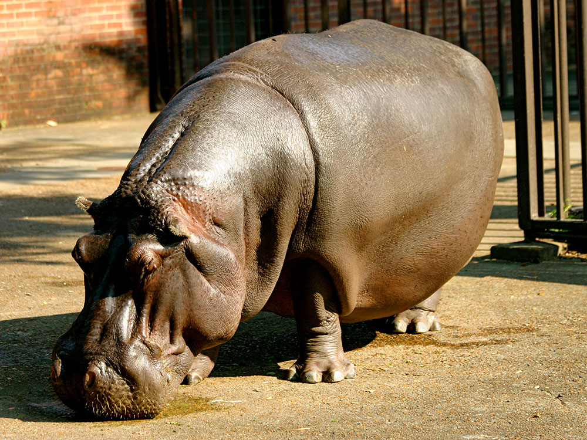
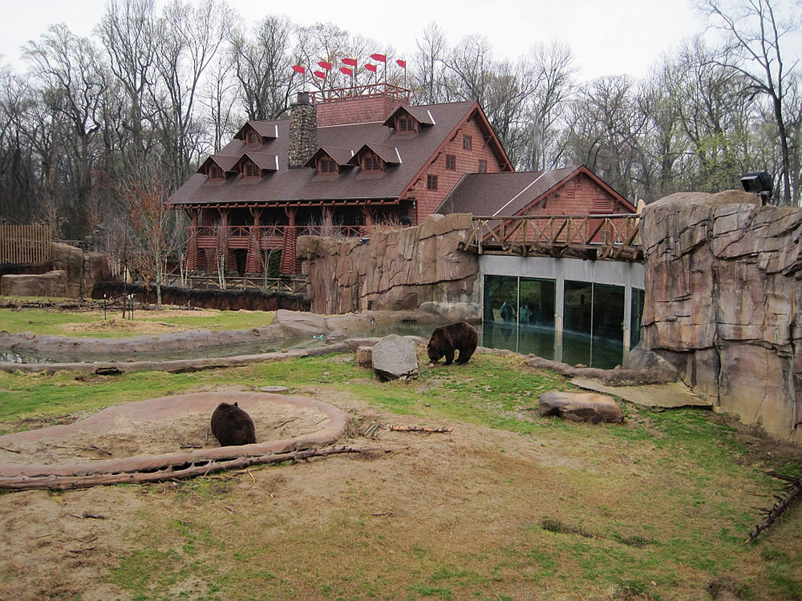
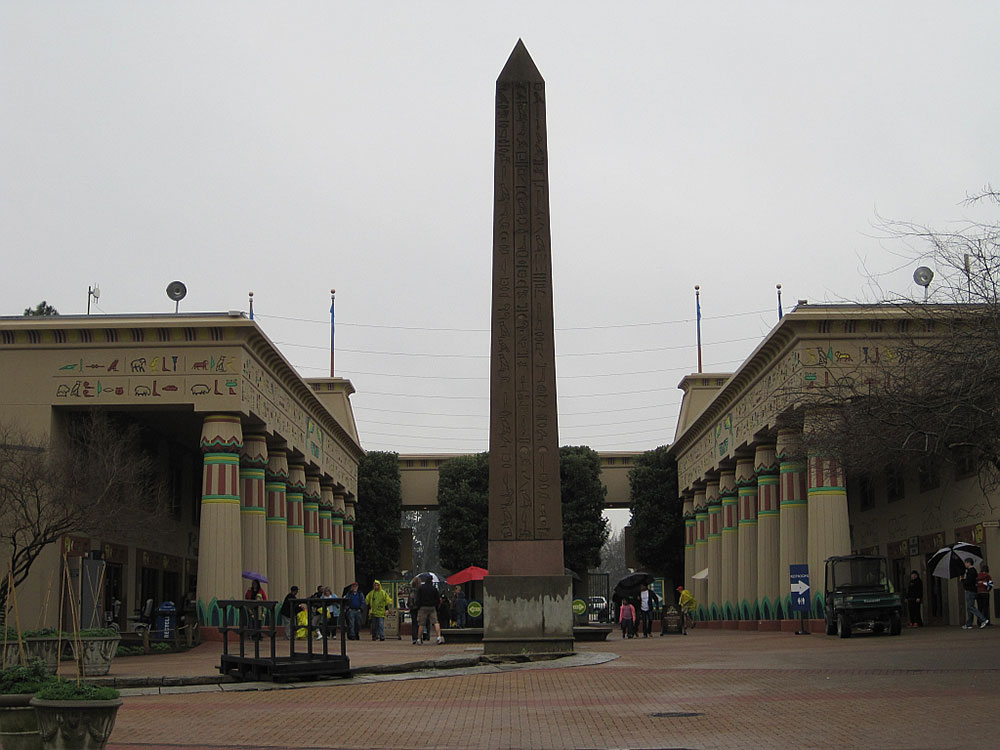
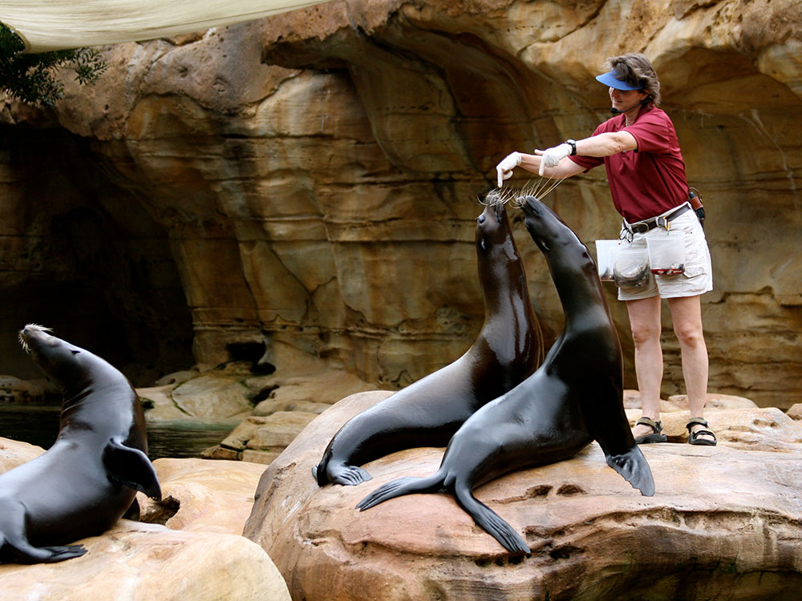

Zoo, located in Midtown, Memphis, is home to more than 3,500 animals representing over 500 different species
General Information
Last admission: 5:00pm
Seniors (60+): Approximately $22
Children: Approximately $18
Additional charges may apply for select rides and special experiences.
How to Get There
From Downtown Memphis (4 mi): Take Poplar Avenue east from downtown Memphis, turn into Overton Park, and follow signs to the Memphis Zoo at 2000 Prentiss Pl.
The Memphis Zoo, located in Midtown, Memphis, is home to more than 3,500 animals representing over 500 different species. Created in April 1906, the zoo has been a major tenant of Overton Park for more than 100 years.
In 2008, the Memphis Zoo was ranked "#1 Zoo in the U.S." by TripAdvisor. The ranking was based on visitor opinions.
The zoo's animal inhabitants reside in three zones with 19 exhibits, such as Teton Trek, Northwest Passage and China, home to giant pandas Ya Ya and Le Le.
The zoo hosts modern exhibits that mimic the animals' natural habitats, such as Once Upon A Farm, Cat Country, Primate Canyon, Dragon's Lair, Animals of the Night, Tropical Bird House, Herpetarium, Aquarium, African Veldt, Zambezi River Hippo Camp, China, Northwest Passage, and Teton Trek. Viewing all the exhibits requires a walk of about 2 miles (3.2 km). Operating seasonally, trams provide visitors with guided tours of exhibits for a small daily fee; the trams are also useful for shuttling visitors between distant exhibits. Other attractions at the zoo include a carousel, an area with rides, a miniature train offering a scenic view of the Once Upon A Farm exhibit, and several theme-oriented gift shops and eateries; many of these amenities operate seasonally. A children's playground is located next to the Cat House Cafe, and several family picnic areas are maintained beneath groves of mature trees. An ice skating rink is operated seasonally at the zoo; the tented rink has an area of 5,400 square feet for skating. Camel rides and giraffe feeding are offered from March to October 2012 for a fee.
The zoo is divided into three zones that showcase a total of 19 different exhibits.
The 4-acre (1.6 ha) exhibit, which opened October 2009, brings hallmark features of the Yellowstone National Park to the Memphis Zoo. "Teton" refers to the Teton Range in Wyoming. Teton Trek begins with a 25-foot (7.6 m) replica of the Old Faithful Geyser and a 5,000-square-foot (460 m2) replica of the Old Faithful Inn called the Great Lodge, where interpretive information is presented in an interactive format. The exhibit is home to some of the keystone species of the Yellowstone ecosystem: grizzly bears, elk, timber wolves, trumpeter swans, river otters and sandhill cranes. The exhibit's trail provides visitors with an underwater look at the bears' fishing pond and a prominent overlook atop the 25-foot (7.6 m) replica of Yellowstone's Firehole Falls.
Home to the zoo's polar bears, this $23 million exhibit opened on March 1, 2006, and features an underwater viewing building, sea lion observation bubble and a 500-seat amphitheater for daily sea lion shows. This exhibit's theme is a tribute to the First Nations culture in Canada's western province British Columbia, animals that inhabit the Pacific Northwest, and its horticulture. Messages of conservation inspired by Chief Seattle, a famous Native American chief, are sprinkled throughout the exhibit. Six hand-carved totem poles that stand throughout the area received a Native American blessing ceremony when they arrived at the zoo. The Northwest Passage is also home to the zoo's American bald eagles, black bears, and white-necked ravens.
African elephants, white rhinos, and giraffe are joined by zebras, Grant's gazelle, and ostriches in this area. African cranes, bontebok, lechwe, bongo and scimitar oryx also live here. The zoo finished enlarging the elephant exhibit in 2006; it now features a pool that allows elephants to submerse and bathe.
In this exhibit, two wooden bridges take visitors through a wetland. It is home to around 30 Chilean flamingos and a variety of other waterfowl.
This exhibit opened in May 2009. It features an up-close look at two honey bee hives. Displays inside the exhibit explain what makes bees special and the role they play in agriculture. The indoor bee exhibit leads to an outdoor aviary that features approximately 500 budgies, commonly known as parakeets. In addition to viewing these colorful birds, visitors can feed them using millet seed-heads attached to sticks that are available for a small fee.
Opened in April 2003, this $16 million exhibit is a zoogeographical area the Memphis Zoo constructed after it became one of only four U.S. zoos to exhibit the giant panda. Other animals showcased in this effort to preserve Chinese species include Sulawesi Black-crested macaques, Père David's deer, Red pandas, François' langurs, and an assortment of colorful birds such as the golden pheasant and red-crowned crane.
This exhibit was opened in 1995 and features naturalistic, outdoor exhibit areas for western lowland gorillas, Sumatran orangutans and siamang gibbons. Other animals in the area are lion-tailed macaques, black-and-white ruffed lemurs, Mona monkeys, Sulawesi macaques, red ruffed lemurs, lesser spot-nosed monkeys, eastern black-and-white colobus, and savanna baboons.
This 3-acre (1.2 ha), open-air exhibit houses African lions, cheetahs, Reeve's muntjac, Amur leopards, meerkats, caracals, capybaras, klipspringers, cougars, Sumatran tigers, Bengal tigers, crested screamers, jaguars, snow leopards, and ocelots. The zoo employed cultural architecture native to the land of the species on exhibit (for example, temple ruins surround the Sumatran tiger exhibit). The old Carnivora Building, where the cats used to live, was renovated to become the Memphis Zoo's primary restaurant - the Cat House Café.
This African exhibit opened in 2016. Its location is adjacent to the Primate Pavilion and south entrance to the African Veldt. It is home to hippos, Nile crocodiles, okapi, yellow-backed duikers, Cape vultures, taveta weavers, nyalas, mandrills, blue-bellied rollers, patas monkeys, and flamingos.
Six bonobos (including a baby bonobo born in 2005) live in this indoor/outdoor hybrid exhibit across from the China exhibit. The bonobo is endangered and is found in the wild only in the Democratic Republic of Congo.
This exhibit reverses the daily cycle of nocturnal animals, giving visitors the chance to see night-dwellers at their most active. The exhibit is developed around a central bat flyway which enables visitors to get a close-up view of the bats in flight or feeding. Also exhibited are a wide range of other species—from aardvark to wombat.
This exhibit was specifically built for the Komodo dragon, the largest lizard in the world. The zoo's three dragons share a special exhibit with outdoor and indoor areas allowing them to stay warm during the cool winter months. Keepers hold a feeding demonstration of the Komodo dragons on Saturdays. Currently, a visiting Komodo dragon from the St. Louis Zoo is visiting for breeding purposes (2013).
A variety of colorful birds in outdoor enclosures can be seen by visitors at the entrance to the zoo's Tropical Bird House. The building is home to exotic bird species from around the world such as the pygmy falcon, azure-winged magpie, Bali myna, crested coua, golden white-eye, Jambu fruit dove, Mariana fruit dove, plush-crested jay, purple-throated fruitcrow, red-billed hornbill, Tinian monarch, Toco toucan, and the white-tailed trogon. The exhibit features a walk-through aviary which allows visitors close contact to a number of birds, especially during feeding time.
The Aquarium is one of the oldest exhibits at the Memphis Zoo and houses aquatic life from both fresh and salt water environments. Some of the more notable animals include: Nile softshell turtles, Fly River turtles, mata mata turtles, electric eels, red bellied piranhas, archer fish, green moray eels, porcupine pufferfish, and Volitan lionfish, The electric eel exhibit has a unique feature that converts the eel's electric pulses into a sound and visual display.
Over 30 African penguins live across from the zoo's rides area at Penguin Rock. American white pelicans are located nearby.
This exhibit was built to resemble an early 1900s farm. It is home to Caspian horses, domestic goats, prairie dogs, domestic chickens, Babydoll sheep, miniature cows, guinea pigs, Pekin ducks and miniature donkeys. In addition to farm animals, a vegetable garden, a cotton patch, and rows of corn provide visitors with some of the essential elements of a southern farm during the growing season.
Located across from the Tropical Bird House, the herpetarium is home to the zoo's snakes such as the Burmese python, American alligators, lizards such as the Prehensile-tailed skink, and frogs such as the azure poison dart frog, Bell's horned frog, and milk frog. It includes the rare Louisiana pine snake and the axolotl, in addition to some of the most venomous snakes in the world, including the green mamba, Eastern diamondback rattlesnake, and Gaboon viper. It is home to an alligator snapping turtle and Galápagos tortoises. In a seasonal exhibit, a simulated shallow pond provides favorable breeding habitat for the highly endangered Mississippi gopher frog; this exhibit also features a slide presentation describing the zoo's participation in the frog's recovery program.
The Round Barn is home to gerenuks, which are known by their extremely long necks. Keepers encourage their foraging behavior by placing tall bamboo stems in their exhibit. This exhibit also houses Abyssinian ground-hornbills, warthogs, red river hogs, nyalas, yellow-backed duikers, dik diks, klipspringers, and dama gazelles.
This article uses material from the Wikipedia article "Memphis Zoo" which is released under the Creative Commons Attribution-Share-Alike License 3.0






